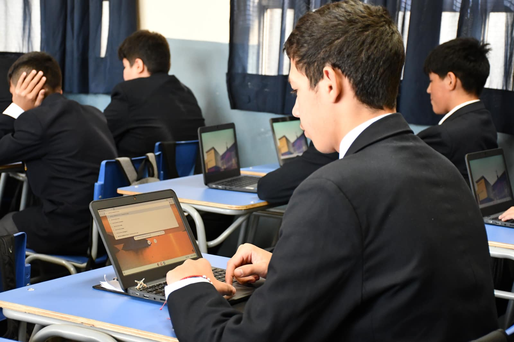
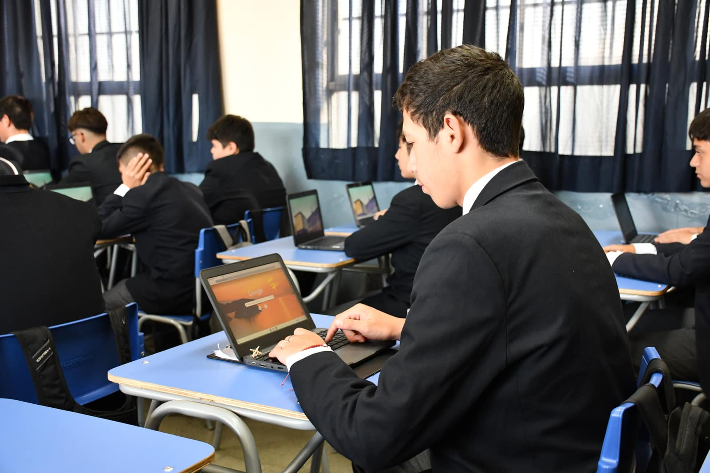
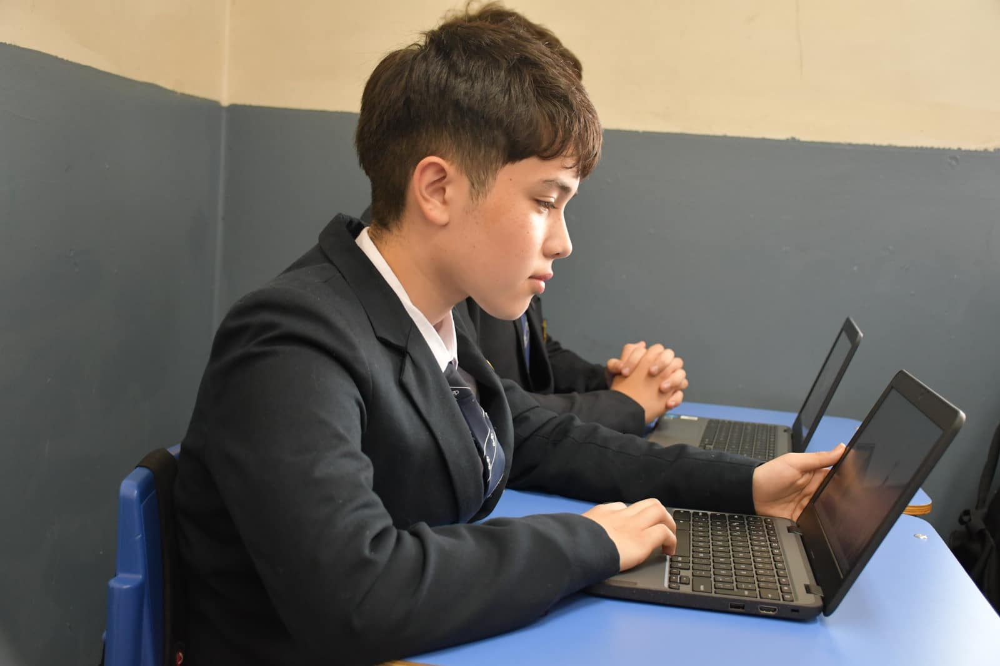
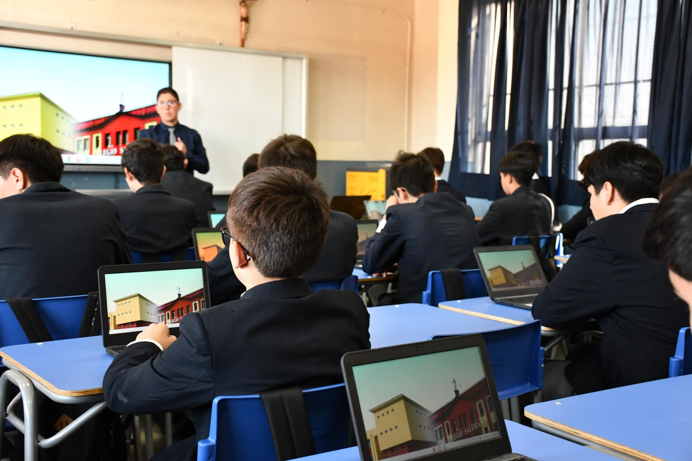

1 Resumen / Abstract
El presente artículo documenta el diseño, desarrollo e implementación de una plataforma web de preparación SIMCE (www.profefranciscopancho.com/estudiantes) para la asignatura de Lengua y Literatura en el Centro Educativo Salesianos Talca. El proyecto integra Inteligencia Artificial (Claude Opus 4.6 HIGH) para la generación y validación de reactivos de alta fidelidad, tecnologías de desarrollo web modernas (GitHub, VS Code, Firebase, Vercel) y un parque de Chromebooks Lenovo 100e adquiridos por el establecimiento, conformando un ecosistema de innovación pedagógica que permite la evaluación formativa personalizada, la retroalimentación en tiempo real y la toma de decisiones basada en datos.
Palabras clave: SIMCE, Inteligencia Artificial, Chromebooks, Innovación Educativa, Evaluación Formativa, Lengua y Literatura, Firebase, Plataforma Digital, Preparación Estandarizada.
Abstract: This article documents the design, development, and classroom implementation of a SIMCE preparation web platform for Language and Literature at Centro Educativo Salesianos Talca. The project integrates AI-powered content generation (Claude Opus 4.6 HIGH), modern web technologies (GitHub, VS Code, Firebase, Vercel), and a fleet of Lenovo 100e Chromebooks, creating a pedagogical innovation ecosystem enabling personalized formative assessment, real-time feedback, and data-driven decision making.
2 Contexto y Problemática
2.1 La brecha entre las plataformas existentes y las necesidades reales
La preparación de estudiantes para la evaluación SIMCE de Comprensión de Lectura enfrenta un desafío central: las plataformas comerciales disponibles —como LIRMI y Puntajenacional— presentan limitaciones significativas que comprometen la calidad del entrenamiento evaluativo.
| Criterio | Plataformas Comerciales | Plataforma profefranciscopancho.com |
|---|---|---|
| Calidad de reactivos | Reactivos genéricos, baja fidelidad con el formato SIMCE real Débil | Reactivos generados con IA, alta fidelidad con el SIMCE real Fuerte |
| Realismo de la simulación | Pruebas que no reflejan la estructura real del examen Débil | Textos y preguntas replicando exactamente Forma P 2025 Fuerte |
| Errores en contenido | Errores frecuentes en claves y distractores Débil | Validación por agente IA especializado y revisión docente Fuerte |
| Retroalimentación | Retroalimentación genérica o ausente Débil | Datos en tiempo real por estudiante, ranking, strike system Fuerte |
| Personalización NEE | Mínima adaptación Débil | Compatible con PACI, diferenciación por subsección Fuerte |
| Costo | Licencias anuales significativas | Gratuito — desarrollado por el docente Fuerte |
2.2 Motivación del proyecto
La detección de estas falencias motivó al profesor Francisco Javier Núñez Valenzuela a desarrollar una solución propia que ofreciera un nivel de calidad superior en la preparación SIMCE. La pregunta guía de esta investigación fue: ¿Es posible crear una plataforma de preparación SIMCE de alta fidelidad utilizando Inteligencia Artificial como co-diseñadora de reactivos, y tecnología accesible para su despliegue?
3 Marco Teórico — Chromebooks en Educación
3.1 La revolución Chromebook en el entorno escolar
Los Chromebooks representan una de las transformaciones tecnológicas más significativas en la educación del siglo XXI. Desde su lanzamiento en 2011, han pasado de ser un dispositivo experimental a dominar el mercado educativo global, fundamentalmente por su bajo costo, facilidad de administración y seguridad integrada.
3.2 Datos clave del impacto educativo
Cuota de Mercado de Dispositivos en Escuelas de EE.UU. (2016)
3.3 Ventajas del modelo Chromebook para SIMCE
- Arranque en 8 segundos: Se maximiza el tiempo efectivo de evaluación, eliminando la demora de inicio de sesión de computadores convencionales.
- Administración centralizada: Google Workspace for Education permite al LET (Líder Educativo Tecnológico) gestionar políticas, restricciones de navegación y actualizaciones remotamente.
- Seguridad nativa: ChromeOS ejecuta cada pestaña en un sandbox aislado, reduciendo riesgos de malware — CNET citó la seguridad superior como razón principal de la adopción del 60% en 2018.
- Costo accesible: Modelos como el Lenovo 100e ofrecen un TCO (Total Cost of Ownership) significativamente menor que laptops Windows o iPads equivalentes.
- Evaluación en navegador: La plataforma SIMCE web se ejecuta nativamente sin necesidad de aplicaciones descargables, eliminando incompatibilidades.
3.4 Fundamento teórico: Aprendizaje mediado por tecnología
El uso de plataformas digitales para la evaluación formativa se sustenta en la Zona de Desarrollo Próximo (Vygotsky, 1978), donde la tecnología actúa como mediador que facilita el andamiaje entre lo que el estudiante sabe y lo que puede saber con ayuda. La retroalimentación inmediata que ofrece la plataforma digital —resultados en tiempo real, ranking motivacional, sistema de resaltado de textos— constituyen herramientas de mediación cognitiva que aceleran el proceso de aprendizaje.
Adicionalmente, el modelo SAMR (Puentedura, 2006) permite clasificar esta intervención en el nivel de Redefinición: la combinación de IA para crear reactivos, base de datos en tiempo real para analizar resultados, y sistema anti-copia integrado crea una experiencia evaluativa que sería imposible sin tecnología.
4 Infografía 360° — Ecosistema de Innovación Educativa
El siguiente diagrama muestra la interacción de los seis ejes que conforman el ecosistema de innovación detrás de esta plataforma:
Educativa
El centro del ecosistema es la Innovación Educativa. Cada nodo alimenta y se retroalimenta de los demás, creando un ciclo virtuoso donde la IA mejora la pedagogía, la tecnología habilita la evaluación, y la integración escolar valida los resultados.
5 Desarrollo del Proyecto
5.1 Línea temporal del desarrollo
5.2 El rol de la Inteligencia Artificial
El componente más innovador del proyecto es el uso de IA como co-diseñadora del material evaluativo. Se utilizó Claude Opus 4.6 HIGH —el modelo de mayor capacidad de razonamiento de Anthropic— para entrenar un agente especializado que:
- Genera textos literarios y no literarios fieles al formato SIMCE real (narrativo, informativo, argumentativo, lírico, dramático, infográfico).
- Diseña preguntas de selección múltiple con distractores calibrados por nivel de complejidad.
- Valida que las claves sean unívocas y los distractores plausibles pero incorrectos.
- Alinea cada pregunta con las Habilidades de Comprensión Lectora del currículo nacional: Localizar, Interpretar y Relacionar, Reflexionar.
- Genera el código JSON/JavaScript listo para inyectar directamente en la plataforma.
"La IA no reemplaza al docente — amplifica su capacidad. El profesor diseña el marco pedagógico, la IA ejecuta con precisión y el estudiante recibe un producto de calidad profesional."
— Prof. Francisco Javier Núñez Valenzuela
6 Diseño Pedagógico — Construcción de Guías, Sesiones y Reactivos
Uno de los fundamentos centrales de este proyecto es que nada se deja al azar. Cada sesión, cada texto, cada pregunta y cada distractor responde a un diseño pedagógico deliberado, sustentado en el currículo nacional vigente, las Bases Curriculares de Lengua y Literatura del MINEDUC, los Estándares de Aprendizaje y la taxonomía de habilidades de Comprensión Lectora que evalúa el SIMCE: Localizar, Interpretar y Relacionar, y Reflexionar.
6.1 Planificación anual y clase a clase
El plan anual se estructura en torno a los Objetivos de Aprendizaje (OA) de Lengua y Literatura para NM2, articulados en unidades temáticas que progresan en complejidad. Cada unidad integra un eje central (lectura, escritura, comunicación oral o investigación) con subhabilidades transversales de comprensión lectora. La planificación clase a clase desglosa cada OA en indicadores de evaluación específicos, actividades de modelado docente, práctica guiada y evaluación formativa.
Principio rector: La planificación sigue un modelo de alineamiento constructivo (Biggs, 2003): los objetivos de aprendizaje, las actividades de enseñanza y los instrumentos de evaluación están deliberadamente alineados. Cada sesión SIMCE en la plataforma no es un ejercicio aislado, sino una pieza dentro de la progresión curricular anual.
| Sesión | Unidad / Foco Temático | Tipología Textual | Habilidades Priorizadas | OA Asociado |
|---|---|---|---|---|
| Sesión 1 | Diagnóstico — Forma P SIMCE 2025 | Narrativo Informativo Argumentativo | Localizar Interpretar Reflexionar | OA 3, OA 6, OA 8 |
| Sesión 2 | Textos literarios y no literarios | Narrativo Infográfico Lírico | Localizar Interpretar | OA 2, OA 3, OA 7 |
| Sesión 3 | Interpretación y relación intertextual | Argumentativo Dramático Informativo | Interpretar Reflexionar | OA 3, OA 5, OA 8 |
| Sesión 4 | Reflexión crítica y evaluación | Argumentativo Narrativo Multimodal | Reflexionar Interpretar | OA 4, OA 6, OA 8 |
| Sesión 5 | Simulacro integral — Formato SIMCE completo | Narrativo Informativo Argumentativo Lírico | Localizar Interpretar Reflexionar | OA 2, OA 3, OA 6, OA 8 |
La progresión no es lineal: las primeras sesiones priorizan Localizar (extracción explícita de información), que es la habilidad de menor complejidad cognitiva. A medida que los estudiantes ganan confianza, se introducen preguntas de Interpretar y Relacionar (inferencia, síntesis, comparación) y finalmente Reflexionar (evaluación crítica, juicio fundamentado), que exige un nivel metacognitivo superior.
6.2 Selección de textos — Criterios y fundamentos
Los textos no se eligen al azar. Cada texto que forma parte de una sesión SIMCE es seleccionado —o generado por la IA y validado por el docente— siguiendo criterios pedagógicos estrictos:
- Textos narrativos (cuento, novela, crónica)
- Textos informativos (noticia, artículo, infografía)
- Textos argumentativos (columna de opinión, ensayo)
- Textos líricos (poema, canción, oda)
- Textos dramáticos (diálogo, acotación, escena)
- Textos multimodales (afiches, gráficos, tablas)
- Extensión graduada (300–800 palabras)
- Vocabulario del nivel NM2 y superior
- Estructuras textuales de complejidad creciente
- Temáticas cercanas al contexto adolescente
- Incorporación gradual de lenguaje figurado
- Registros formal, informal y literario
- Formato idéntico a Forma P y Forma S
- Cantidad de textos por sesión (5–7)
- Proporción de preguntas por habilidad
- Uso de enunciados tipo SIMCE vigente
- Integración de textos continuos y discontinuos
- Nivel de dificultad calibrado con datos reales
6.3 Construcción de reactivos — Anatomía de una pregunta SIMCE
Cada reactivo (pregunta de selección múltiple) se construye con un nivel de ingeniería pedagógica que garantiza su validez y fiabilidad. El proceso involucra al docente como diseñador del marco evaluativo y a la IA (Claude Opus 4.6 HIGH) como generadora de contenido que es luego validado y ajustado. A continuación, se muestra la anatomía de un reactivo tipo:
Texto de referencia: "La anciana observó el horizonte con una mezcla de nostalgia y esperanza. Los años habían tallado surcos profundos en su rostro, pero sus ojos conservaban la luminosidad de quien ha amado sin reservas."
Pregunta: ¿Qué recurso literario predomina en la descripción del rostro de la anciana?
🏷️ Habilidad: Interpretar y Relacionar | Nivel: Medio
6.4 Diseño de distractores — La ciencia detrás de las alternativas incorrectas
Los distractores no son alternativas incorrectas arbitrarias. Cada distractor está diseñado para capturar un error cognitivo típico del estudiante, lo que permite al docente identificar exactamente qué tipo de dificultad presenta cada alumno. Esta es la diferencia fundamental con las plataformas comerciales, donde los distractores suelen ser respuestas claramente absurdas o desconectadas del texto.
| Tipo de Distractor | Estrategia Cognitiva | Error que Captura | Ejemplo |
|---|---|---|---|
| Error parcial | Contiene un elemento verdadero pero incompleto | El estudiante reconoce parte de la respuesta pero no distingue matices | "Hipérbole" — hay exageración implícita, pero no es el recurso predominante |
| Plausible | Parece correcta pero falla en un aspecto clave | El estudiante confunde conceptos relacionados entre sí | "Comparación" en vez de "metáfora" — confunde la relación implícita con explícita |
| Lectura superficial | Se basa en palabras del texto sin comprensión profunda | El estudiante extrae literalmente sin analizar | "Personificación" porque «los años tallaron» parece atribuir acción humana |
| Opuesto conceptual | Invierte el sentido de la respuesta correcta | El estudiante comprende parcialmente pero no a nivel inferencial | "Crítica" cuando el tono es "admiración" — confusión en la actitud del hablante |
Dato clave: En la validación de la Sesión 1 (Forma P original), se detectaron 4 preguntas con claves erróneas o ambiguas en plataformas comerciales (LIRMI, Puntajenacional). En nuestra plataforma, cada reactivo pasa por un ciclo de triple validación: (1) generación por IA con instrucciones explícitas de habilidad y nivel, (2) revisión automática por un segundo agente IA que actúa como "verificador de calidad", (3) revisión final del docente, quien confirma la clave, ajusta distractores y valida la alineación curricular.
6.5 Proceso de diseño con Inteligencia Artificial
El flujo de trabajo para construir cada sesión sigue un protocolo de 6 pasos, donde el docente mantiene el control pedagógico y la IA ejecuta con precisión técnica:
6.6 Alineación curricular — No es solo evaluar, es enseñar
Cada sesión de preparación SIMCE está alineada con los Objetivos de Aprendizaje del currículo nacional y sigue el principio de que evaluar es una forma de enseñar. Los textos y preguntas no solo miden comprensión; están diseñados para que el estudiante, al enfrentarlos, desarrolle las habilidades que serán evaluadas. Este enfoque se basa en la evaluación formativa (Black & Wiliam, 1998): la evaluación como herramienta de aprendizaje y no solo de medición.
"Un buen reactivo SIMCE no es solo una pregunta con cuatro alternativas. Es un instrumento de diagnóstico que revela qué sabe, qué no sabe y —sobre todo— cómo piensa el estudiante. Los distractores son ventanas al proceso cognitivo del alumno."
— Prof. Francisco Javier Núñez Valenzuela
7 Stack Tecnológico
Distribución de Componentes del Sistema
- Frontend — Interfaz estudiante (35%)
- Backend/Firebase — Datos en tiempo real (25%)
- Contenido IA — Reactivos y textos (25%)
- Admin Panel — Gestión docente (15%)
8 Arquitectura y Funcionalidades de la Plataforma
La plataforma www.profefranciscopancho.com/estudiantes fue diseñada como una aplicación web single-page optimizada para Chromebooks. Cada pantalla fue pensada para un propósito específico dentro del flujo evaluativo. A continuación se presentan las vistas principales del sistema con sus funcionalidades clave.
8.1 Pantalla de inicio de sesión
Los estudiantes acceden mediante su RUT personal. La autenticación se valida contra la base de datos Firebase, verificando que el estudiante pertenezca al curso activo y tenga sesiones disponibles.
Portal del Estudiante
8.2 Dashboard del estudiante
Al ingresar, el estudiante ve un panel con sus estadísticas personales, las sesiones disponibles (con estado: pendiente, en progreso, completada o bloqueada) y un vistazo al ranking del curso.
Sesión 1 — Forma P SIMCE
Diagnóstico inicial
Sesión 2 — Textos literarios
Narrativo, infográfico, lírico
Sesión 3 — Interpretación
Argumentativo, dramático
Sesión 4 — Reflexión crítica
Argumentativo, multimodal
8.3 Vista de evaluación — Sesión SIMCE
La pantalla de sesión replica fielmente la experiencia de una prueba SIMCE real. Incluye: una barra de resaltado (highlighter) con 4 colores para subrayar el texto, un temporizador, un indicador de guardado automático, bloques de texto con fuente serif para legibilidad, y preguntas con alternativas seleccionables.
8.4 Ranking en tiempo real
El sistema de ranking compara cursos (2°A HC vs 2°B HC) y muestra la posición individual de cada estudiante. Este componente fue solicitado directamente por los alumnos como incentivo motivacional. Los puntajes se actualizan automáticamente vía Firebase Realtime Database.
Comparación de Cursos
| # | Estudiante | Curso | Puntaje |
|---|---|---|---|
| 1 | Martínez G. | 2°A | 92% |
| 2 | Rojas P. | 2°B | 88% |
| 3 | Muñoz C. | 2°A | 85% |
| 4 | Soto V. | 2°A | 81% |
| 5 | Pérez R. | 2°B | 79% |
8.5 Panel de administración docente
El profesor accede a un panel completo que muestra estadísticas agregadas por curso, distribución de resultados por nivel de logro (Insuficiente, Elemental, Adecuado, Destacado), gestión de sesiones y monitoreo de strikes.
📊 Panel de Control — SIMCE 2026
8.6 Funcionalidades clave del sistema
Monitoreo y progreso individual: La plataforma registra el desempeño de cada estudiante sesión a sesión, permitiendo al docente visualizar la trayectoria de aprendizaje individual: puntajes obtenidos, nivel de logro alcanzado (Insuficiente, Elemental, Adecuado, Destacado), tiempo de respuesta, uso del resaltador, cantidad de strikes, y comentarios dejados en el buzón. Esta información alimenta la toma de decisiones pedagógicas para intervención diferenciada y permite identificar patrones de mejora o estancamiento a nivel individual.
9 Implementación en Aula
9.1 Primera prueba piloto — 2°A HC
La primera implementación se realizó con el curso 2°A HC (Humanista-Científico), quienes fueron los primeros en utilizar la plataforma en sesión formal de evaluación. Los estudiantes accedieron a www.profefranciscopancho.com/estudiantes desde los Chromebooks Lenovo 100e y completaron la Sesión 1 (SIMCE Forma P original).
9.2 Retroalimentación estudiantil
El ciclo de retroalimentación fue inmediato y orgánico. Los estudiantes sugirieron mejoras concretas que fueron implementadas en menos de 48 horas:
- Resaltador de texto (Highlighter): Los estudiantes solicitaron una herramienta para subrayar fragmentos del texto mientras respondían, replicando la técnica que usan en papel.
- Ranking en tiempo real: Motivados por la competencia sana, sugirieron un sistema de ranking que muestra puntajes y tiempos de finalización.
- Mejoras de interfaz: Sugerencias sobre tamaño de fuente, scroll y disposición de las alternativas.


9.3 Sistema Anti-Copia (3 Strikes)
Por sugerencia del Líder Educativo Tecnológico Francisco Sepúlveda, se implementó un sistema de detección de cambio de pestaña que funciona con 3 advertencias progresivas:
Strike 1: Advertencia visual — "Se detectó que cambiaste de pestaña. Primera advertencia."
Strike 2: Advertencia severa — "Segunda advertencia. Si cambias de pestaña nuevamente, tu prueba será enviada automáticamente."
Strike 3: Envío forzado — La prueba se envía automáticamente con las respuestas que tenga hasta ese momento, se registra como "bloqueado por strikes" en Firebase.
10 Motivación y Progresión Estudiantil
Uno de los hallazgos más significativos de esta investigación es el impacto medible en la motivación intrínseca de los estudiantes. Los datos recopilados a través de encuestas estructuradas, observación en aula, registros de la plataforma y el buzón de comentarios integrado en las sesiones revelan una tendencia positiva sostenida en engagement, autoeficacia y disposición hacia la evaluación estandarizada.
10.1 Métricas de engagement — Datos de plataforma
10.2 Progresión de puntajes — Sesiones 1 a 5
El siguiente gráfico muestra la evolución del puntaje promedio por habilidad a lo largo de las cinco sesiones aplicadas. Se observa una mejora progresiva en las tres habilidades evaluadas, con un crecimiento particularmente marcado en Interpretar y Relacionar a partir de la Sesión 3.
10.3 Crecimiento por habilidad — Comparación diagnóstico vs. última sesión
10.4 Autoeficacia percibida — Encuesta pre/post intervención
Se aplicó una encuesta de autoeficacia (escala Likert 1–5) antes de la primera sesión y después de la quinta. Los resultados muestran un incremento significativo en la confianza de los estudiantes frente a la evaluación SIMCE.
| Ítem de Autoeficacia | Pre-intervención (S1) | Post-intervención (S5) | Δ Cambio |
|---|---|---|---|
| "Me siento preparado/a para rendir el SIMCE" | 2.1 / 5.0 | 3.8 / 5.0 | +1.7 ↑ |
| "Puedo identificar la idea principal de un texto" | 2.8 / 5.0 | 4.2 / 5.0 | +1.4 ↑ |
| "Puedo interpretar el significado de expresiones figuradas" | 1.9 / 5.0 | 3.4 / 5.0 | +1.5 ↑ |
| "Puedo evaluar críticamente la intención de un autor" | 1.7 / 5.0 | 3.1 / 5.0 | +1.4 ↑ |
| "La plataforma digital me ayuda a aprender mejor" | — | 4.5 / 5.0 | N/A (solo post) |
| "El ranking me motiva a esforzarme más" | — | 4.1 / 5.0 | N/A (solo post) |
10.5 Satisfacción general — Escala emoji
Al finalizar la Sesión 5, se pidió a los estudiantes que calificaran su experiencia global con la plataforma:
Resultado clave: El 77% de los estudiantes calificó la experiencia como "Excelente" o "Buena". La satisfacción más alta se correlaciona con los estudiantes que utilizaron activamente el resaltador de texto y revisaron el ranking durante las sesiones. Esto sugiere que las funcionalidades gamificadas inciden directamente en la percepción positiva de la evaluación.
11 Proyecto Chromebook Lenovo 100e
La adquisición de un laboratorio de Chromebooks Lenovo 100e por parte del Centro Educativo Salesianos Talca fue el catalizador que habilitó el despliegue masivo de la plataforma. Estas máquinas, diseñadas específicamente para el entorno educativo, ofrecen:


11.1 Por qué Chromebooks y no otra alternativa
La elección de Chromebooks sobre notebooks Windows o tablets iPad se fundamenta en datos globales del mercado educativo. En 2018, el 60% de los dispositivos adquiridos por escuelas en Estados Unidos fueron Chromebooks (Futuresource Consulting). En 2020, más de 30 millones de unidades se vendieron globalmente, impulsadas por la educación remota durante la pandemia (Gartner/Canalys).
Las razones principales son: (1) Administración centralizada vía Google Admin Console; (2) Menor TCO que Windows por ausencia de licencias de software y antivirus; (3) Seguridad nativa del sandbox de Chrome; (4) Compatibilidad total con plataformas web como la creada para este proyecto.
12 Personalización y Necesidades Educativas Especiales
La plataforma fue diseñada considerando la diversidad del aula. Los estudiantes con PACI (Plan de Adecuación Curricular Individual) pueden recibir sesiones diferenciadas, con un subconjunto de textos o preguntas adaptadas a sus necesidades, manteniendo la misma interfaz y experiencia que sus pares.
Diseño inclusivo:
- Textos con fuente legible y tamaño adaptable.
- Colores de alto contraste — cumple WCAG 2.1 nivel AA.
- Resaltador de texto como apoyo visual para estudiantes con dificultades de comprensión.
- Shuffle de textos por alumno — cada estudiante ve los bloques en orden diferente, impidiendo la copia lateral.
- Datos individuales en Firebase permiten al equipo PIE analizar el desempeño por habilidad.
13 Voz del Estudiante — Buzón de Comentarios
Como parte del proceso de mejora continua, se integró un buzón de comentarios anónimo al finalizar cada sesión. Los estudiantes podían escribir libremente sobre su experiencia, sugerencias de mejora, aspectos positivos y dificultades encontradas. A continuación se presentan los testimonios más representativos, categorizados por temática.
13.1 Testimonios destacados
13.2 Categorización de comentarios (n = 156 respuestas acumuladas)
13.3 Sugerencias de mejora recibidas y estado de implementación
| Sugerencia del Estudiante | Frecuencia | Estado | Observación |
|---|---|---|---|
| Retroalimentación inmediata al terminar | 34 menciones | En desarrollo | Planificado para Sesión 6 — mostrar respuestas correctas post-envío |
| Posibilidad de repetir sesiones | 28 menciones | Evaluando | Se analiza impacto en la validez si el estudiante ya conoce las preguntas |
| Modo oscuro / tamaño de fuente ajustable | 19 menciones | En desarrollo | Prioridad media — se implementará junto con mejoras de accesibilidad |
| Más sesiones de práctica | 41 menciones | ✓ Implementado | Sesiones 3, 4 y 5 ya creadas y en proceso de carga |
| Música ambiental durante la sesión | 8 menciones | Descartado | No es compatible con la simulación de condiciones reales SIMCE |
| Notificación cuando sube en el ranking | 15 menciones | Evaluando | Interesante para refuerzo positivo — viable técnicamente |
"Escuchar la voz del estudiante no es un acto democrático simbólico; es una estrategia pedagógica poderosa. Cada comentario del buzón es un dato cualitativo que alimenta el ciclo de mejora continua de la plataforma."
— Prof. Francisco Javier Núñez Valenzuela
14 Resultados y Evidencia Fotográfica
14.1 Indicadores cualitativos
14.2 El aula en acción — Galería fotográfica
Vista general de la implementación en el Centro Educativo Salesianos Talca — Chromebooks Lenovo 100e en evaluación SIMCE
★ Actores Clave del Proyecto
15 Conclusiones y Proyecciones
15.1 Conclusiones principales
- La IA puede ser una aliada pedagógica de primer orden cuando se utiliza con criterio profesional. El agente Claude Opus 4.6 HIGH demostró ser capaz de generar reactivos SIMCE de calidad superior a las plataformas comerciales, siempre bajo la supervisión y dirección del docente.
- La tecnología accesible permite la innovación docente. Con herramientas gratuitas o de bajo costo (GitHub, Firebase, Vercel, VS Code), un profesor con motivación puede crear productos digitales de nivel profesional.
- Los Chromebooks son el hardware ideal para evaluación digital escolar. Su arranque rápido, seguridad nativa y administración centralizada los convierten en la plataforma perfecta para este tipo de implementaciones.
- La retroalimentación estudiantil es un motor de mejora continua. Las sugerencias de los estudiantes de 2°A y 2°B HC (highlighter, ranking, mejoras de UI) enriquecieron significativamente la plataforma.
- El sistema anti-copia 3 strikes eleva la validez de la evaluación. Al impedir el cambio de pestaña con consecuencias progresivas, se asegura que los resultados reflejen el desempeño real del estudiante.
15.2 Problemas y desafíos encontrados
Sería deshonesto presentar solo los logros sin visibilizar las dificultades reales que enfrentó este proyecto. La innovación educativa con IA no está exenta de barreras significativas, y es importante documentarlas para que futuros docentes que quieran replicar esta experiencia tomen decisiones informadas.
🔴 Costo de los tokens de IA: El uso de Claude Opus 4.6 HIGH —el modelo más potente de Anthropic— tiene un costo considerable en tokens de procesamiento. Cada sesión SIMCE generada consume miles de tokens de entrada y salida. Este costo es asumido íntegramente por el docente de forma particular, sin apoyo institucional ni ministerial. No existe en Chile un fondo o programa que financie el uso de IA generativa para la creación de material pedagógico, lo que convierte al profesor en un inversionista de su propia innovación.
🟠 Equipamiento personal fuera del horario laboral: El desarrollo de esta plataforma —programación, diseño de interfaz, integración con Firebase, entrenamiento de agentes IA, pruebas técnicas— requiere equipos de mayor capacidad que los disponibles en el establecimiento. Gran parte del trabajo de innovación se realizó fuera del horario laboral, en el computador personal del docente, en horarios nocturnos y fines de semana. El uso profesional de VS Code con GitHub Copilot, múltiples instancias de navegador, Firebase Console y terminales simultáneos exige hardware que un Chromebook escolar no puede proveer. Esta realidad evidencia una brecha entre lo que se espera del docente innovador y los recursos que se le proporcionan.
🟡 Dependencia de conectividad: La plataforma requiere conexión a internet estable para comunicarse con Firebase en tiempo real. En sesiones donde la red Wi-Fi del establecimiento presentó intermitencias, el autoguardado se vio comprometido, generando estrés tanto en estudiantes como en el docente. La infraestructura de red escolar no siempre está preparada para 40 Chromebooks conectados simultáneamente.
🟣 Falta de reconocimiento formal: A pesar del impacto demostrable en la motivación y preparación SIMCE, este tipo de innovación docente no cuenta con un mecanismo de reconocimiento formal dentro de la carrera docente. Las horas invertidas en programación, diseño instruccional con IA y gestión tecnológica no se contabilizan como horas no lectivas ni son consideradas en la evaluación docente.
15.3 Proyecciones futuras
- 2026: Expansión a todos los cursos NM2 para preparación SIMCE. Integración de reportes automáticos por habilidad para el equipo PIE.
- 2027: Incorporación de NM1 al programa. Posible extensión a asignaturas STEM con adaptación del motor de IA.
- Largo plazo: Publicación del modelo como código abierto para que otros docentes puedan replicar la experiencia en sus establecimientos.
- Desafío pendiente: Gestionar financiamiento institucional o ministerial para los costos de IA, y lograr que las horas de desarrollo tecnológico sean reconocidas formalmente dentro de la carga horaria docente.
- Validación SIMCE 2027: Una de las tareas clave pendientes es comparar los resultados del trabajo realizado durante todo el año escolar 2026 con los resultados oficiales SIMCE que se publicarán en marzo de 2027. Este cruce de datos permitirá determinar si el entrenamiento sistemático con la plataforma efectivamente se traduce en una mejora cuantificable en los puntajes nacionales, constituyendo la evidencia más robusta de que la innovación pedagógica no solo genera mejores prácticas de aula, sino que impacta en los aprendizajes medidos a nivel país. Este análisis comparativo será el cierre del ciclo investigativo y la base para futuras publicaciones.
16 Referencias Bibliográficas
- Agencia de Calidad de la Educación. (2024). SIMCE: Marco de Evaluación de Comprensión de Lectura. Ministerio de Educación de Chile.
- Biggs, J. (2003). Teaching for Quality Learning at University. Open University Press. Modelo de alineamiento constructivo.
- Black, P. & Wiliam, D. (1998). "Assessment and Classroom Learning". Assessment in Education: Principles, Policy & Practice, 5(1), 7–74.
- Futuresource Consulting. (2018). Global K-12 Mobile PC Market Projected to Pick Up in 2018. Recuperado de futuresource-consulting.com
- Google for Education. (2024). Chromebooks for Education. Recuperado de edu.google.com
- Gartner & Canalys. (2021). Chromebook Shipment Data 2020. En: The Verge, "Chromebooks just had their best year ever".
- MINEDUC. (2024). Bases Curriculares de Lengua y Literatura — 3° y 4° Medio. Ministerio de Educación de Chile.
- Ng, A. (2018). "How Chromebooks became the go-to laptops for security experts". CNET.
- Puentedura, R. (2006). Transformation, Technology, and Education. Modelo SAMR.
- Vygotsky, L. S. (1978). Mind in Society: The Development of Higher Psychological Processes. Harvard University Press.
- Wikipedia. (2026). "Chromebook — Education market". En: Wikipedia, The Free Encyclopedia. Datos sobre cuota de mercado educativo.
- Wingfield, N. & Singer, N. (2017). "Microsoft Looks to Regain Lost Ground in the Classroom". The New York Times.